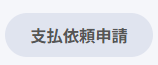

申請
よくある質問
オンライン秘書向け｜申請 操作ガイド
新しいツール導入費用を申請する際に使用します。
赤いアスタリスク（*）の部分は必ず入力すること

サイドバーの「申請」メニューを開き、稟議申請（ツール導入費）をクリック

承認者がイメージしやすいように具体的に書く。以下を意識して記載する：
見積書のスクショ画像を添付する。
金額に応じて承認者が自動でセットされる。内容を確認する。
備品・消耗品の発注、外部業者への発注など物品・サービスの購入を申請する際に使用します。
赤いアスタリスク（*）の部分は必ず入力すること
サイドバーの「申請」メニューを開き、稟議申請｜発注・備品購入等をクリック
承認者がイメージしやすいように具体的に書く。以下を意識して記載する：
見積書のスクショ画像を添付する。
金額に応じて承認者が自動でセットされる。内容を確認する。
初めて取引する会社・個人事業主と契約・支払いが発生する前に必要な申請です。
「申請」→「新規取引先登録申請」を選択する。
担当者から受け取った関連書類（口座確認書・名刺・会社概要など）をアップロードする。
フォーム上の＊（必須項目）を上から順に入力していく。
入力が終わったら「申請する」ではなく 「下書き保存」 をクリックする。
下書き保存後、Slackで中野さんに確認依頼を送る（林さんからの依頼は林さんへ）。
承認済みの稟議に紐づけて、経理に実際の支払いを依頼する申請です。稟議申請の承認が完了してから行います。
返金対応のときは稟議がないため、新規取引先登録申請が承認されてから申請する。
| 種別 | 申請〆切（経理ルール） | 承認〆切（経理ルール） |
|---|---|---|
| 月次分まとめて | 翌月初 第５営業日 例：4月7日（火） |
翌月初 第７営業日 例：4月9日（木） |
| 毎週（急ぎの支払のみ） | 毎週水曜日 例：4/1（水）中に申請完了 |
毎週木曜日 15時 例：4/2（木）15時までに承認 |
「申請」→「支払依頼申請」を選択する。
 のボタンを押す 必須
のボタンを押す 必須
紐づける稟議申請をフリーワードで検索して選択する。
稟議申請と紐づくと支払先などが自動で入力される。＊を入力していく
＊支払期日：2026年支払スケジュール（予定）を見て支払期日を入力
＊費用計上部門：組織図を見て依頼人の部署を確認する
＊稟議との紐づけ確認：返金対応の場合は稟議はないが、「稟議との紐づけを確認しました」を選択する
 を押して＊請求書ファイルをアップロードする
を押して＊請求書ファイルをアップロードする
下書きに保存し、中野さんに確認依頼のSlackを送る（林さんからの依頼は林さんへ）。
作業中に迷ったときはここを確認してください。